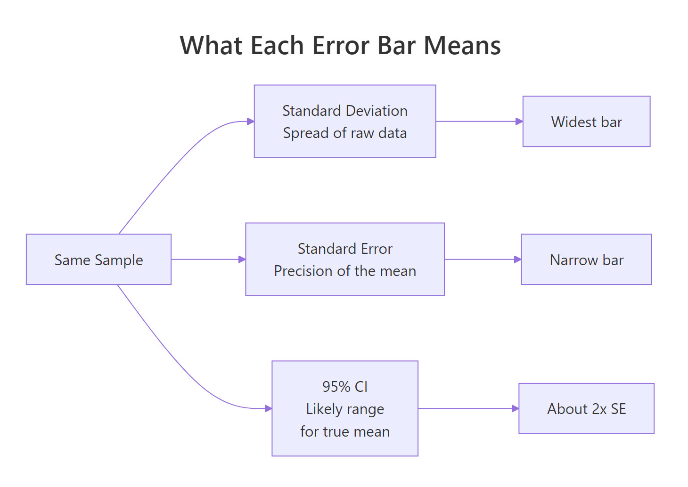
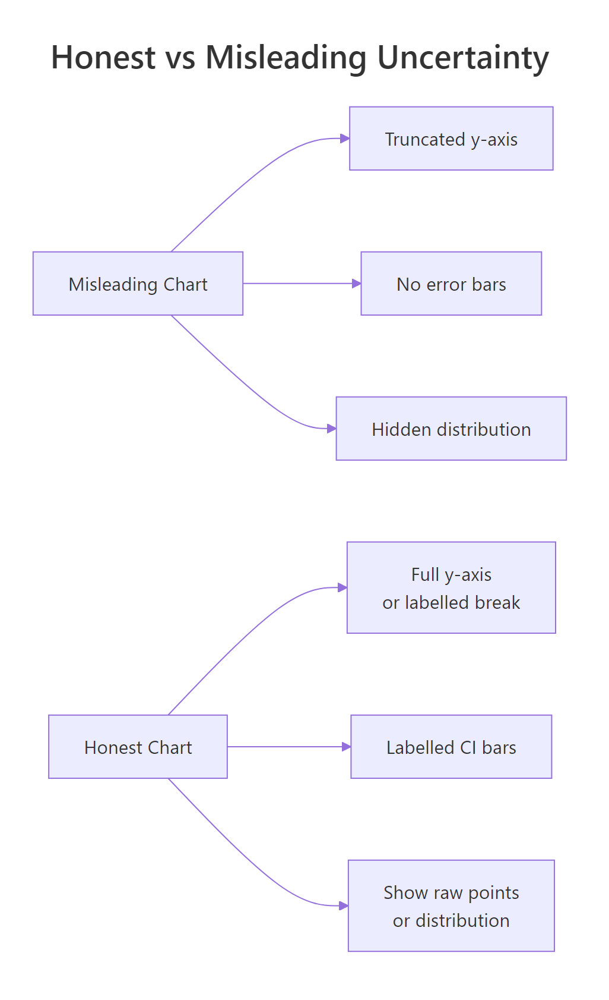
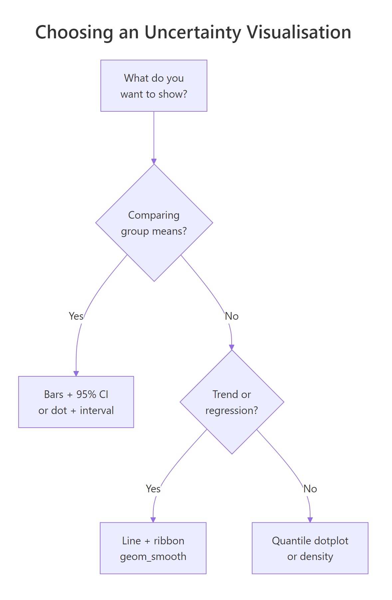

Communicating Uncertainty in R: Visualise Confidence Without Misleading Anyone
A chart without uncertainty whispers a confident lie: "this is the exact value." Honest visualisation in R shows the wobble around every estimate so readers can judge how much to trust it.
This guide walks through how to draw error bars, confidence bands, and quantile dotplots in ggplot2, when each one helps, when it misleads, and the words you should pair with them so your audience reads your chart the way you mean it.
Why does showing uncertainty change what your chart says?
Two studies report the same 12% improvement. One sampled 30 patients; the other sampled 500. Without uncertainty bars, the two results look identical and the smaller study punches above its weight. Add 95% confidence intervals and the picture flips: one estimate is rock solid, the other could swing anywhere from negligible to large. Here is the same data drawn both ways so you can feel the difference.
Both studies report a 12% point estimate, but Study A's interval ranges from 2% to 22%, the true effect could be tiny or huge. Study B's interval is tight at 9% to 15%, so we can act on it with confidence. Strip the bars away and a reader sees two identical columns; add them, and the story is honest.
Try it: Add an error bar layer to a one-row data frame. The mean is 50, the lower bound is 45, the upper bound is 55. Plot a single bar with the interval drawn on top.
Click to reveal solution
Explanation: geom_errorbar() needs ymin and ymax aesthetics. The width argument controls the horizontal cap, not the bar width.
What do error bars actually mean, SD, SE, or CI?
The phrase "error bar" hides three very different things. Standard deviation tells you how much the raw data varies around its mean. Standard error tells you how precise that mean estimate is. A 95% confidence interval is the range you would expect the true population mean to live in if you repeated the experiment many times. Same data, three widths.

Figure 1: What each error bar type measures, all from the same sample.
The SD bar is roughly seven times wider than the CI bar. They answer different questions, so the choice changes the chart's meaning. SD bars say "look how spread out the data are." CI bars say "look how confident I am about the mean." Picking the wrong one is not a stylistic choice, it changes the claim.
Notice that the dot, the sample mean, is in the same place in all three columns. Only the bar width changes. A reader who does not know which type you are showing has no way to interpret the chart.
Try it: Compute a 99% confidence interval (use 2.576 instead of 1.96) for a fresh sample of 100 draws from N(50, 8). Save the half-width to ex_ci99.
Click to reveal solution
Explanation: The 99% interval is wider than the 95% interval because you trade certainty for precision. Same standard error, bigger multiplier.
How do you add error bars and confidence bands in ggplot2?
ggplot2 gives you two core tools. geom_errorbar() draws discrete bars on top of categorical summaries, useful for comparing group means. geom_smooth() or geom_ribbon() draws a continuous band around a fitted line, useful for regressions or trends. Pick the one that matches the shape of your data.
Each species gets one column (the mean) and one vertical interval (the 95% CI on that mean). Setosa and virginica are clearly different, their intervals do not even come close. Versicolor sits between them. Without the bars you would still see the ordering, but you would have no idea how confident the differences are.
For a continuous predictor, switch to geom_smooth(). The grey ribbon is the 95% confidence interval around the fitted regression line, wider where the data are sparse, narrower where the data are dense.
The ribbon balloons at the extremes of weight because we have fewer cars there, the model is less sure about the slope where data are thin. That balloon is information, not decoration. Readers who ignore the band see a single confident line; readers who read it see where the model knows what it is doing and where it is guessing.
geom_smooth ribbon is a 95% CI on the fitted mean, not a prediction interval for new points.Try it: Repeat the mtcars regression plot with a 99% confidence band instead of 95%.
Click to reveal solution
Explanation: level = 0.99 widens the ribbon because a 99% interval is more conservative than 95%. Same data, more cautious claim.
When do error bars start lying?
Error bars are not magic. The same chart with a 95% CI bar can still mislead if the y-axis is truncated, if the underlying distribution is hidden, or if the reader is invited to compare overlap in ways that do not match the statistics. These are the three traps to watch for.

Figure 2: Three habits that flip a chart from honest to misleading.
The numbers 98 to 101 are nearly identical. On the truncated chart the Friday bar looks twice the height of Monday. On the honest chart you can barely tell them apart. Both charts are technically accurate; only one is honest. Run the second print(p_full) to compare.
The second trap is hidden distribution shape. A bar with a CI tells you where the mean is, but a mean of 50 can come from data clustered at 50 or from data split between 0 and 100. Showing the raw points alongside makes this visible.
Both groups share roughly the same mean, but one cluster is tightly packed and the other is split into two camps. A bar chart with error bars would have shown you a single column with a moderate CI for each, and you would never have known the bimodal group was hiding two populations. Always sanity-check by plotting raw points when sample size allows it.
Try it: A colleague shows you a bar chart of monthly revenue where the y-axis starts at $98,000 and ends at $102,000. The bars look dramatically different. Should you trust the visual impression? Print "honest" or "misleading" with one sentence of reasoning.
Click to reveal solution
Explanation: Truncated axes exaggerate small differences. The fix is to start at zero or label an axis break and show the percent change instead of raw dollars.
What are quantile dotplots, gradient intervals, and honest captions?
Even a perfectly drawn 95% CI is hard for non-statisticians to interpret. Research on how people read uncertainty shows that a row of discrete dots, each representing a chunk of probability, is more accurate for laypeople than a continuous ribbon. This is called frequency framing: humans count better than they integrate. Below is a hand-built quantile dotplot in ggplot2 with no extra packages.
The plot answers questions a CI bar struggles with. "How likely is the value to be below 85?" Count the dots, about three out of twenty, so roughly 15%. "What is the most likely region?" The fattest stack. Readers who would freeze at the words "95% confidence interval" can read this chart immediately because it is just counting.
ggdist add stat_dotsinterval(), stat_lineribbon(), and gradient intervals that go far beyond what base ggplot2 ships with. They run in your local R session, this tutorial sticks to base ggplot2 so every block is reproducible inline.The chart is only half of the message. Whatever words you wrap around it shape how readers interpret it. A neutral phrasing like "the data are consistent with an effect between 2% and 22%" is honest. A confident phrasing like "the treatment improves outcomes by 12%" is not, even if the chart is correct.
| Avoid | Use instead |
|---|---|
| "shows", "proves", "demonstrates" | "estimates", "is consistent with", "suggests" |
| "the effect is 12%" | "the estimated effect is 12% (95% CI: 2% to 22%)" |
| "significant difference" | "the 95% CIs do not overlap; a t-test gives p = 0.02" |
| "no effect" | "the data are consistent with effects between -3% and +5%" |
Try it: Rewrite this misleading caption to be honest: "Treatment X works, patients improved by 8 points."
Click to reveal solution
Explanation: The honest version names the sample size, replaces "works" with "improved by an estimated", and surfaces the interval so the reader knows how loose or tight the estimate is.
Practice Exercises
Exercise 1: Four groups with honest captions
You have four group means and standard errors: A=25/2.1, B=30/3.5, C=28/1.8, D=33/2.7 (all n=40). Build a ggplot bar chart with 95% CI error bars and add a subtitle stating sample size and interval type.
Click to reveal solution
Explanation: Computing lower and upper from the SE keeps the plotting code readable. The subtitle is doing real work, it says how big the groups are and what the bars mean.
Exercise 2: Build a quantile dotplot from scratch
Draw 1000 samples from N(20, 4). Build a 20-dot quantile dotplot and add a vertical line at the sample mean.
Click to reveal solution
Explanation: The trick is computing 20 quantiles at the midpoints of equal probability slices. geom_dotplot() then stacks them with stackratio controlling vertical spacing.
Exercise 3: Two-study side-by-side comparison
Study A has n=30, mean=12, sd=10. Study B has n=500, mean=12, sd=10. Compute the 95% CI for each mean and draw a ggplot showing both as dot + interval.
Click to reveal solution
Explanation: Larger samples shrink the standard error by the square root of n, so Study B's interval is roughly four times tighter than Study A's even though the point estimate is identical.
Complete Example
Here is the whole pipeline end to end on the iris dataset: compute the mean and 95% CI of sepal length per species, draw a dot + interval plot, and write an honest caption.
The plot earns its honesty in three places: the subtitle states the sample size and interval type, the caption restates them for anyone who skipped the subtitle, and the dot + interval format keeps the focus on precision instead of bar volume. A reader sees the order of species, the gap between them, and how confident each estimate is, all in one glance.
Summary

Figure 3: A short decision tree for picking an uncertainty visualisation.
- Show the wobble, not just the point. Every chart that claims an estimate should also show how much that estimate could move.
- SD, SE, and CI are different. Pick deliberately and label what you picked.
- Truncated axes exaggerate. Either start at zero or mark the break clearly.
- Bars hide distributions. Plot raw points or use a quantile dotplot when the shape might matter.
- Captions are part of the chart. State the sample size, the interval type, and the level. Replace "shows" and "proves" with "estimates" and "is consistent with".
- Overlap is not significance. If you need a test, run one, do not eyeball intervals.
References
- Wilke, C., Fundamentals of Data Visualization, Chapter 16: Visualizing uncertainty. Link
- Cookbook-R, Plotting means and error bars (ggplot2). Link/)
- Cumming, G. & Finch, S., Inference by eye: confidence intervals and how to read pictures of data. American Psychologist, 2005. Link
- ggplot2 reference,
geom_errorbar,geom_ribbon,geom_smooth. Link - Kay, M., ggdist: Visualizations of Distributions and Uncertainty. Link
- Hofman, J., Goldstein, D. & Hullman, J., How visualizing inferential uncertainty can mislead readers about treatment effects. CHI 2020. Link
- R Core Team,
t.test()reference. Link
Continue Learning
- Bias in Data and Models, Sources of error your error bars do not show.
- R and the Reproducibility Crisis, Why honest reporting matters at the publication level.
- Data Ethics for R Programmers, Questions to ask before you analyse.